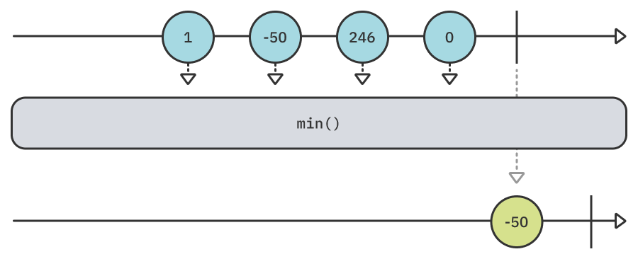
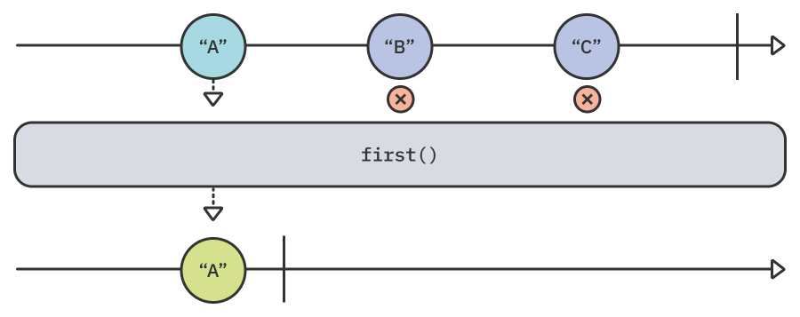
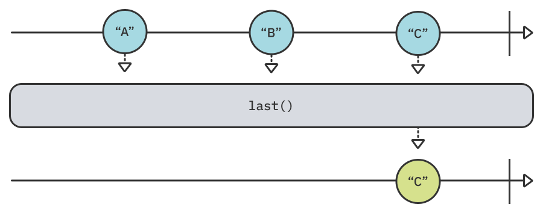
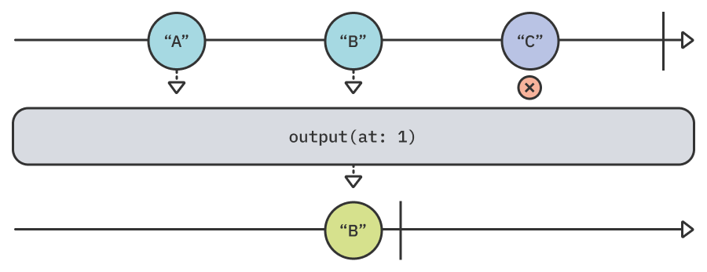
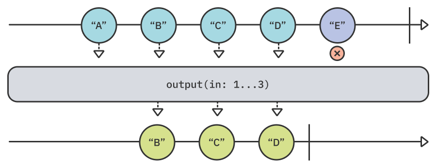
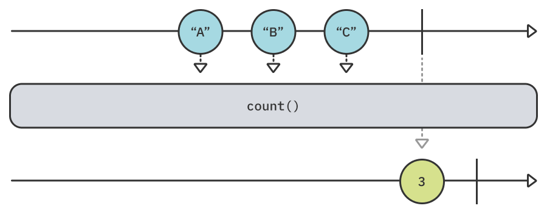
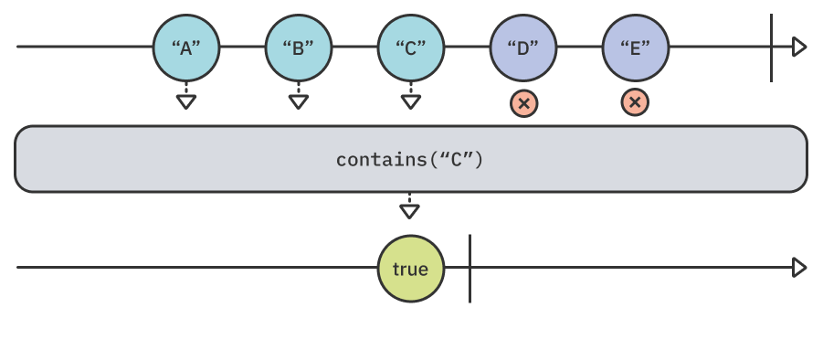
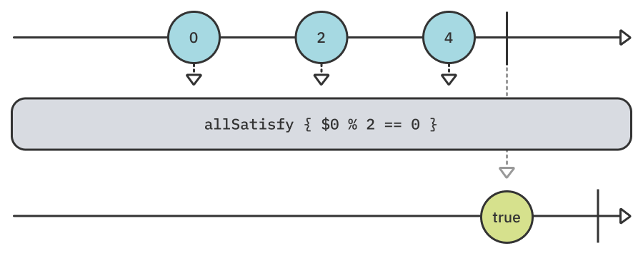
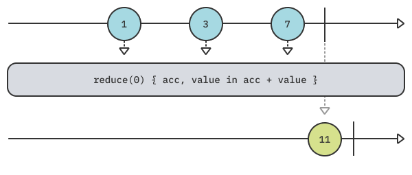

第7章：序列操作符¶
在这一点上，你知道Combine必须提供的大多数操作符！这有多棒？不过，还有一个类别供您深入研究：序列操作符。
当您意识到发布者本身只是序列时，序列操作符最容易理解。序列操作符与发布者的值一起工作，就像数组或集合一样——当然，它们只是有限序列！
考虑到这一点，序列操作符主要处理整个发布者，而不是像其他操作符类别那样处理单个值。
此类别中的许多操作符的名称和行为与Swift标准库中的操作符几乎相同。
入门指南¶
您可以在projects/Starter.playground中找到本章的入门Playground。在本章中，您将向Playground添加代码并运行它，以了解这些不同的序列操作符如何操纵您的发布者。您将使用print操作符记录所有发布事件。
查找值¶
本章的第一部分由操作符组成，它们根据不同的标准定位发布者发出的特定值。这些类似于Swift标准库中的收集方法。
min¶
min操作符允许您找到发布者发出的最小值。这是贪婪的，这意味着它必须等待发布者发送.finished的完成事件。一旦发布者完成，操作符只发出最小值：

将以下示例添加到您的Playground以尝试min：
example(of: "min") {
// 1
let publisher = [1, -50, 246, 0].publisher
// 2
publisher
.print("publisher")
.min()
.sink(receiveValue: { print("Lowest value is \($0)") })
.store(in: &subscriptions)
}
在这个代码中，您：
- 创建一个发出四个不同数字的发布者。
- 使用
min操作符查找发布者发出的最小数字并打印该值。
运行您的Playground，您将在控制台中看到以下输出：
——— Example of: min ———
publisher: receive subscription: ([1, -50, 246, 0])
publisher: request unlimited
publisher: receive value: (1)
publisher: receive value: (-50)
publisher: receive value: (246)
publisher: receive value: (0)
publisher: receive finished
Lowest value is -50
如您所见，发布者会发出所有值并完成，然后min找到最小值并将其发送到下游以打印出来。
但是等等，Combine如何知道这些数字中哪一个是最小值？好吧，这要归功于数字值符合Comparable协议的事实。您可以直接在发出符合Comparable类型的发布者上使用min()，没有任何参数。
但是，如果你的价值观不符合Comparable，会发生什么？幸运的是，您可以使用min(by:)操作符提供自己的比较器闭包。
考虑以下示例，您的发布者会发布许多Data，您希望找到最小的数据。
将以下代码添加到您的Playground：
example(of: "min non-Comparable") {
// 1
let publisher = ["12345",
"ab",
"hello world"]
.map { Data($0.utf8) } // [Data]
.publisher // Publisher<Data, Never>
// 2
publisher
.print("publisher")
.min(by: { $0.count < $1.count })
.sink(receiveValue: { data in
// 3
let string = String(data: data, encoding: .utf8)!
print("Smallest data is \(string), \(data.count) bytes")
})
.store(in: &subscriptions)
}
在上面的代码中：
- 您创建一个发布者，该发布者会发出从各种字符串创建的三个
Data对象。 - 由于
Data不符合Comparable，因此您可以使用min(by:)操作符查找字节数最小Data对象。 - 您可以将最小
Data对象转换回字符串并打印出来。
运行您的Playground，您将在控制台中看到以下内容：
——— Example of: min non-Comparable ———
publisher: receive subscription: ([5 bytes, 2 bytes, 11 bytes])
publisher: request unlimited
publisher: receive value: (5 bytes)
publisher: receive value: (2 bytes)
publisher: receive value: (11 bytes)
publisher: receive finished
Smallest data is ab, 2 bytes
与前面的示例一样，发布者会发出所有Data对象并完成，然后min(by:)找到并发射字节大小最小的数据，并sink将其打印出来。
max¶
正如你所猜的，max的工作原理与min完全相同，只是它找到了发布者发出的最大值：

将以下代码添加到您的Playground以尝试此示例：
example(of: "max") {
// 1
let publisher = ["A", "F", "Z", "E"].publisher
// 2
publisher
.print("publisher")
.max()
.sink(receiveValue: { print("Highest value is \($0)") })
.store(in: &subscriptions)
}
在以下代码中，您：
- 创建一个发出四个不同字母的发布者。
- 使用
max操作符找到值最高的字母并打印出来。
运行你的Playground。您会在Playground中看到以下输出：
——— Example of: max ———
publisher: receive subscription: (["A", "F", "Z", "E"])
publisher: request unlimited
publisher: receive value: (A)
publisher: receive value: (F)
publisher: receive value: (Z)
publisher: receive value: (E)
publisher: receive finished
Highest value is Z
就像min一样，max是贪婪的，必须等待上游发布者完成其值，然后才能确定最大值。在这种情况下，该值为Z。
Note
与min完全一样，max也有一个伴随max(by:)操作符，该操作符接受谓词来确定非Comparable值之间发射的最大值。
first¶
虽然min和max操作符处理在某个未知索引处查找已发布的值，但本节中的其余操作符处理在特定位置查找发射值，从first操作符开始。
first操作符类似于Swift在集合上first属性，只是它允许第一个发射值通过然后完成。它很懒惰，这意味着它不会等待上游发布者完成，而是会在收到发出的第一个值时取消订阅。

将上述示例添加到您的Playground：
example(of: "first") {
// 1
let publisher = ["A", "B", "C"].publisher
// 2
publisher
.print("publisher")
.first()
.sink(receiveValue: { print("First value is \($0)") })
.store(in: &subscriptions)
}
在上面的代码中，您：
- 创建一个发出三个字母的发布者。
- 使用
first()只让第一个发射值通过并打印出来。
运行您的Playground并查看控制台：
——— Example of: first ———
publisher: receive subscription: (["A", "B", "C"])
publisher: request unlimited
publisher: receive value: (A)
publisher: receive cancel
First value is A
一旦first()获得发布者的第一个值，它就会取消对上游发布者的订阅。
如果您正在寻找更精细的控制，您也可以使用first(where:)。 就像它在Swift标准库中的对应物一样，它将发出与提供的谓词匹配的第一个值——如果有的话。
将以下示例添加到您的Playground：
example(of: "first(where:)") {
// 1
let publisher = ["J", "O", "H", "N"].publisher
// 2
publisher
.print("publisher")
.first(where: { "Hello World".contains($0) })
.sink(receiveValue: { print("First match is \($0)") })
.store(in: &subscriptions)
}
在这个代码中，您：
- 创建一个发出四个字母的发布者。
- 使用
first(where:)操作符找到Hello World中包含的第一个字母，然后打印出来。
运行Playground，您将看到以下输出：
——— Example of: first(where:) ———
publisher: receive subscription: (["J", "O", "H", "N"])
publisher: request unlimited
publisher: receive value: (J)
publisher: receive value: (O)
publisher: receive value: (H)
publisher: receive cancel
First match is H
在上面的示例中，操作符检查Hello World是否包含发出的字母，直到找到第一个匹配项：H。发现这么多后，它取消了订阅，并发出字母供水sink打印出来。
last¶
就像min有一个相反的，max，first也有一个相反：last！
last工作原理与first完全相同，除了它发出发布者发出的最后一个值。这意味着它也贪婪，必须等待上游出版商完成：

将以下示例添加到您的Playground：
example(of: "last") {
// 1
let publisher = ["A", "B", "C"].publisher
// 2
publisher
.print("publisher")
.last()
.sink(receiveValue: { print("Last value is \($0)") })
.store(in: &subscriptions)
}
在这个代码中，您：
- 创建一个发布者，该发布者将发出三个字母并完成。
- 使用
last操作符仅发出已发布的最后一个值并将其打印出来。
运行Playground，您将看到以下输出：
——— Example of: last ———
publisher: receive subscription: (["A", "B", "C"])
publisher: request unlimited
publisher: receive value: (A)
publisher: receive value: (B)
publisher: receive value: (C)
publisher: receive finished
Last value is C
last等待上游发布者发送.finished完成事件，此时它发送下游要打印在sink中的最后一个发射值。
Note
与first完全一样，last也有一个last(where:)重载，它发出匹配指定谓词的发布者发出的最后一个值。
output(at:)¶
本节的最后两个操作符在Swift标准库中没有对应的操作符。output操作符将在指定索引处查找上游发布者发出的值。
您将从output(at:)开始，它只发出在指定索引处发出的值：

将以下代码添加到您的Playground以尝试此示例：
example(of: "output(at:)") {
// 1
let publisher = ["A", "B", "C"].publisher
// 2
publisher
.print("publisher")
.output(at: 1)
.sink(receiveValue: { print("Value at index 1 is \($0)") })
.store(in: &subscriptions)
}
在上面的代码中，您：
- 创建一个发出三个字母的发布者。
- 使用
output(at:)只允许在索引1上发出的值——即第二个值。
在Playground中运行示例，然后偷看控制台：
——— Example of: output(at:) ———
publisher: receive subscription: (["A", "B", "C"])
publisher: request unlimited
publisher: receive value: (A)
publisher: request max: (1) (synchronous)
publisher: receive value: (B)
Value at index 1 is B
publisher: receive cancel
在这里，输出表示索引1的值是B。然而，您可能注意到另一个有趣的事实：操作符在每次发射值后要求再增加一个值，因为它知道它只在寻找单个项目。虽然这是特定操作符的实现细节，但它为苹果如何设计自己的一些内置组合操作符来利用背压提供了有趣的见解。
output(in:)¶
您将用output操作符的第二个重载来结束此部分：output(in:)
虽然 output(at:) 发出在指定索引处发出的单个值，但 output(in:) 发出的值的索引在提供的范围内：

要尝试一下，请将以下示例添加到您的Playground中：
example(of: "output(in:)") {
// 1
let publisher = ["A", "B", "C", "D", "E"].publisher
// 2
publisher
.output(in: 1...3)
.sink(receiveCompletion: { print($0) },
receiveValue: { print("Value in range: \($0)") })
.store(in: &subscriptions)
}
在之前的代码中，您：
- 创建一个发出五个不同字母的发布者。
- 使用
output(in:)操作符只允许通过指数1至3中发出的值，然后打印出这些值。
你能猜出这个例子的输出是什么吗？运行您的Playground并找出：
——— Example of: output(in:) ———
Value in range: B
Value in range: C
Value in range: D
finished
嗯，你猜对了吗？操作符在索引范围内发出单个值，而不是索引的集合。操作符打印值B、C和D，因为它们分别在指数1、2和3中。然后，由于范围内的所有项目都已发出，一旦收到提供范围内的所有值，它就会取消订阅。
查询发布者¶
以下操作符还处理发布者发出的整套值，但他们不会产生它发出的任何特定值。相反，这些操作符发出一个不同的值，表示整个发布者的一些查询。这方面的一个很好的例子是count操作符。
count¶
count操作符将发出一个值——一旦发布者发送.finished完成事件，上游发布者发出的值数量：

添加以下代码来尝试此示例：
example(of: "count") {
// 1
let publisher = ["A", "B", "C"].publisher
// 2
publisher
.print("publisher")
.count()
.sink(receiveValue: { print("I have \($0) items") })
.store(in: &subscriptions)
}
在上面的代码中，您：
- 创建一个发出三个字母的发布者。
- 使用
count()发出一个值，指示上游发布者发出的值数。
运行您的Playground并检查控制台。您将看到以下输出：
——— Example of: count ———
publisher: receive subscription: (["A", "B", "C"])
publisher: request unlimited
publisher: receive value: (A)
publisher: receive value: (B)
publisher: receive value: (C)
publisher: receive finished
I have 3 items
不出所料，值3只有在上游发布者发送.finished完成事件后才会打印出来。
contains¶
另一个有用的操作符是contains。您可能在Swift标准库中使用过它多次对应的对应物。
如果上游发布者发出指定值，contains操作符将发出true并取消订阅，如果没有一个发射值等于指定的值，则false：

将以下内容添加到您的Playground中以尝试contains：
example(of: "contains") {
// 1
let publisher = ["A", "B", "C", "D", "E"].publisher
let letter = "C"
// 2
publisher
.print("publisher")
.contains(letter)
.sink(receiveValue: { contains in
// 3
print(contains ? "Publisher emitted \(letter)!"
: "Publisher never emitted \(letter)!")
})
.store(in: &subscriptions)
}
在之前的代码中，您：
- 创建一个发出五个不同字母（
A到E）的发布者，并创建一个与contains一起使用的letter值。 - 使用
contains来检查上游发布者是否发送了letter的值：C。 - 根据是否发出该值，打印适当的消息。
运行您的Playground并检查控制台：
——— Example of: contains ———
publisher: receive subscription: (["A", "B", "C", "D", "E"])
publisher: request unlimited
publisher: receive value: (A)
publisher: receive value: (B)
publisher: receive value: (C)
publisher: receive cancel
Publisher emitted C!
Huzzah！您收到一条消息，表明C是由发布者发送的。您可能还注意到contains是懒惰的，因为它只消耗了执行工作所需的上游值。一旦找到C，它将取消订阅，并且不会产生任何进一步的值。
你为什么不尝试另一种变体呢？替换以下行：
let letter = "C"
为：
let letter = "F"
接下来，再次运行您的Playground。您将看到以下输出：
——— Example of: contains ———
publisher: receive subscription: (["A", "B", "C", "D", "E"])
publisher: request unlimited
publisher: receive value: (A)
publisher: receive value: (B)
publisher: receive value: (C)
publisher: receive value: (D)
publisher: receive value: (E)
publisher: receive finished
Publisher never emitted F!
在这种情况下，contains等待发布者发出F。但是，发布者在完成时没有发出F，因此contains发送false，您会看到打印出的适当消息。
最后，有时您想寻找您提供的谓词的匹配项，或检查是否存在不符合Comparable发射值。对于这些特定案例，您contains(where:)
将以下示例添加到您的Playground：
example(of: "contains(where:)") {
// 1
struct Person {
let id: Int
let name: String
}
// 2
let people = [
(123, "Shai Mishali"),
(777, "Marin Todorov"),
(214, "Florent Pillet")
]
.map(Person.init)
.publisher
// 3
people
.contains(where: { $0.id == 800 })
.sink(receiveValue: { contains in
// 4
print(contains ? "Criteria matches!"
: "Couldn't find a match for the criteria")
})
.store(in: &subscriptions)
}
之前的代码有点复杂，但不是很多。你：
- 定义带有
id和name的Person结构。 - 创建一个发布者，发布三个不同的
People实例。 - 使用
contains查看其中任何一个的id是否为800。 - 根据发出的结果打印适当的消息。
运行您的Playground，您将看到以下输出：
——— Example of: contains(where:) ———
Couldn't find a match for the criteria
它没有像预期的那样找到任何匹配项，因为没有一个被发射的人的id为800。
接下来，更改contains(where:)的实现：
.contains(where: { $0.id == 800 })
为以下内容:
.contains(where: { $0.id == 800 || $0.name == "Marin Todorov" })
再次运行Playground并查看控制台：
——— Example of: contains(where:) ———
Criteria matches!
这次它找到了一个与谓词匹配的值，因为Marin确实是列表中的人之一。太棒了！ :]
allSatisfy¶
其他操作符我们已经学完了，只剩下两个了！两者在Swift标准库中都有对应的收集方法。
您将从allSatisfy开始，它采用闭包谓词并发出布尔值，指示上游发布者发出的所有值是否与该谓词匹配。这是贪婪的，因此，将等到上游发布者发出.finished完成事件：

将以下示例添加到您的Playground中以尝试此操作：
example(of: "allSatisfy") {
// 1
let publisher = stride(from: 0, to: 5, by: 2).publisher
// 2
publisher
.print("publisher")
.allSatisfy { $0 % 2 == 0 }
.sink(receiveValue: { allEven in
print(allEven ? "All numbers are even"
: "Something is odd...")
})
.store(in: &subscriptions)
}
在上面的代码中，您：
- 创建一个发布者，以
2的步骤（即0、2和4）发射0到5之间的数字。 - 使用
allSatisfy检查所有发射值是否均等，然后根据发送的结果打印适当的消息。
运行代码并检查控制台输出：
——— Example of: allSatisfy ———
publisher: receive subscription: (Sequence)
publisher: request unlimited
publisher: receive value: (0)
publisher: receive value: (2)
publisher: receive value: (4)
publisher: receive finished
All numbers are even
由于所有值确实是偶数，因此在上游发布者发送 .finished 完成后，操作符会发出 true，并打印出适当的消息。
但是，如果即使单个值没有通过谓词条件，操作符将立即发出false并取消订阅。
替换以下行：
let publisher = stride(from: 0, to: 5, by: 2).publisher
为:
let publisher = stride(from: 0, to: 5, by: 1).publisher
您只需将stride更改为0到5之间，乘以1，而不是2。再次运行Playground并查看控制台：
——— Example of: allSatisfy ———
publisher: receive subscription: (Sequence)
publisher: request unlimited
publisher: receive value: (0)
publisher: receive value: (1)
publisher: receive cancel
Something is odd...
在这种情况下，一旦发出1，谓词就不再通过，因此allSatisfy发出false并取消订阅。
reduce¶
好吧，我们到了！这个相当拥挤的一章的最终操作符：reduce。
reduce操作符与本章涵盖的其他操作符略有不同。它不会查找特定值或查询整个发布者。相反，它允许您根据上游出版商的排放量迭代积累新值。
起初，这听起来可能令人困惑，但你很快就会明白的。最简单的开始方法是使用图表：

Combine的reduce操作符的工作原理与Swift标准库中的对应操作符一样：reduce(_:_)和reduce(into:_:)
它允许您提供种子值和累加器闭包。该闭包接收累积值（从种子值开始）和当前值。从该闭包中，您将返回一个新的累积值。一旦操作符收到.finished完成事件，它就会发出最终的累积值。
就上面的图表而言，你可以这样想：
Seed value is 0
Receives 1, 0 + 1 = 1
Receives 3, 1 + 3 = 4
Receives 7, 4 + 7 = 11
Emits 11
是时候尝试一个快速的例子来更好地了解这个操作符了。将以下内容添加到您的Playground：
example(of: "reduce") {
// 1
let publisher = ["Hel", "lo", " ", "Wor", "ld", "!"].publisher
publisher
.print("publisher")
.reduce("") { accumulator, value in
// 2
accumulator + value
}
.sink(receiveValue: { print("Reduced into: \($0)") })
.store(in: &subscriptions)
}
在这个代码中，您：
- 创建一个发出六
String的发布者。 - 使用空字符串的种子
reduce，将发射的值附加到它以创建最终字符串结果。
运行Playground并查看控制台输出：
——— Example of: reduce ———
publisher: receive subscription: (["Hel", "lo", " ", "Wor", "ld", "!"])
publisher: request unlimited
publisher: receive value: (Hel)
publisher: receive value: (lo)
publisher: receive value: ( )
publisher: receive value: (Wor)
publisher: receive value: (ld)
publisher: receive value: (!)
publisher: receive finished
Reduced into: Hello World!
请注意，只有当上游发布者发送.finished完成活动时，才会打印累积结果——Hello World!。
reduce的第二个参数是一个闭包，它接受某种类型的两个值，并返回同一类型的值。在Swift中，+也是一个与该签名匹配的函数。
因此，作为最后的巧妙技巧，您可以减少上面的语法。替换以下代码：
.reduce("") { accumulator, value in
// 3
return accumulator + value
}
为简单的写法：
.reduce("", +)
如果您再次运行您的Playground，它将与以前完全相同，语法更花哨。;]
Note
这个操作符觉得有点熟悉吗？好吧，这可能是因为您在第3章“转换操作符”中了解了scan。scan和reduce具有相同的功能，主要区别在于scan为每个发射值发出累积值，而一旦上游发布者发送.finished完成事件，reduce会发出单个累积值。请随时更改reduce以在上面的示例中scan，并亲自尝试一下。
关键点¶
- 出版商实际上是序列，因为它们产生的值与集合和序列非常相似。
- 您可以使用
min和max分别发射发布者发出的最小值或最大值。 first当您想找到在特定索引处发射的值时，last和output(at:)非常有用。使用output(in:)查找在指数范围内发出的值。first(where:)``last(where:)每个人都取一个谓词来确定它应该通过哪个值。count、contains和allSatisfy等操作符不会发射发布者发出的值。相反，它们根据发射的值发出不同的值。contains(where:)取谓词来确定发布者是否包含给定值。- 使用
reduce将发射值累积到单个值中。
接下来去哪？¶
恭喜你完成了这本书关于操作符的最后一章！快速拍拍自己的背部，并在你做的时候给自己击掌。:]
您将通过完成第一个实际项目来结束本节，您将使用Combin和您学到的许多操作符构建拼贴应用程序。深吸几口气，喝杯咖啡，然后继续下一章。